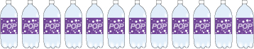
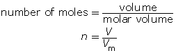
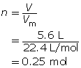

Module 3—Behaviour of Gases
 Explore
Explore
Molar Volume of Gases
Avogadro’s theory states that equal volumes of any gas, measured at constant temperature and pressure, contain equal numbers of molecules. But how many molecules are there?
From your previous learning in science you know that chemical quantities are expressed as moles. A mole is defined as 6.02 × 1023 atoms, molecules, or particles. Therefore when you indicate that a mole of propane combusts, you are also saying that 6.02 × 1023 molecules of propane combust. To make measuring a quantity of a gas easier, we often use volumes—so what volume does one mole of propane, or any other gas, occupy?
It should not surprise you that the molar volume for all gases is dependent upon the temperature and pressure of the gas. Therefore, there are two common temperature/pressure sets:
Set |
Conditions |
standard temperature and pressure (STP) |
0 °C and 101.325 kPa |
standard ambient temperature and pressure (SATP) |
25 °C and 100 kPa |
At these conditions a mole of any gas has the following volumes:
STP 22.4 L/mol.

This means that one mole of gas at STP constitutes about 11 two-litre pop bottles!
SATP 24.8 L/mol
If the conditions are changed to SATP, a higher temperature, and a slightly lower pressure, the volume occupied by the same number of particles of gas is 24.8 L/mol.

This means that one mole of gas at SATP constitutes over 12 two-litre pop bottles!
Volumes are used when dealing with gases because measuring the mass of a gas is just too hard! Knowing the molar volume allows you to calculate the number of moles of a gas or the volume of gas according to this formula:

Example 1
How many moles of oxygen are available for a combustion reaction in a volume of 5.6 L at STP?

What volume is occupied by 0.024 mol of carbon dioxide gas at SATP?